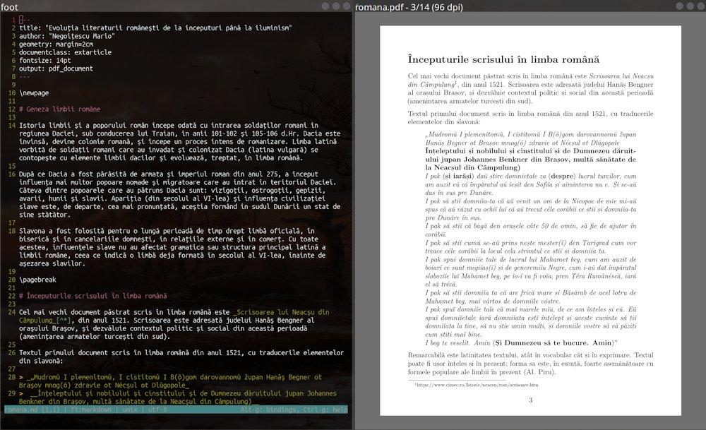

negoitescu — [home]
Note despre Pandoc
Semestrul anterior, am început folosirea unei noi metode de a crea și edita articole și cărți, anume Pandoc, care permite, pe lângă altele, folosirea limbajului de marcare Markdown concomitent cu funcțiile motorului LaTex, pe care Pandoc rulează.

Exemplu utilizare Pandoc
Site-ul oficial Pandoc conține un ghid destul de amănunțit, dar a trebuit să caut mai multe informații și din alte surse pentru unele funcții de care am avut nevoie în redactarea unei mici cărți în Pandoc. Așadar, voi trece peste toate funcțiile pe care le-am descoperit până acum și unele sfaturi.
💾 Puteți descărca un exemplu care conține toate funcțiile pe care le-am menționat aici și documentul precompilat într-un PDF aici.
Pentru început...
Fără vreo modificare, Pandoc va folosi tema standard a motorului LaTex, deci documentele vor avea marginile foarte mari. Pentru a rezolva asta, trebuie să includem un antet cu marginile specificate. În acest antet, putem seta și alte opțiuni ale documentului care ne pot fi utile:
---
title: Primul meu document
author: Nume Exemplu
lang: ro
geometry: margin=2cm
---După cum puteți vedea în ultima opțiune, am setat marginile să fie de doi centimetri. De-asemenea, am setat titlul și autorul și am specificat limba documentului, ceea ce ne va fi de folos mai târziu.
Formatarea unei foi de titlu
Pentru formatarea unei cărți simple, ideal, ne trebuie o foaie de
titlu simplă, care să conțină titlul și autorul împreună cu alte detalii
despre text. Totuși, dacă nu specificăm, Pandoc va interpreta foaia de
titlu ca oricare altă pagină, punându-i inclusiv un număr la dosul
paginii, ceea ce nu este ideal.
Pentru a specifica că dorim o foaie de titlu simplă, trebuie să folosim
câteva comenzi specifice LaTeX:
\thispagestyle{empty}
\newpageNota bene!
Titlul și autorul vor fi preluate din antetul pe care l-am scris mai
sus. Puteți, de-asemenea, să introduceți anul publicării astfel:
date: 2025Schimbarea dimensiunii fontului
Pentru a mări dimensiunea fontului ne va trebui extensia extsizes*.
Se specifică în antet folosirea extensiei și dimensiunea fontului pe care o doriți. O dimensiune bună pentru e-readere ar fi de 17pt:
documentclass: extarticle
fontsize: 17ptPuteți de-asemenea să schimbați familia fontului cu opțiunea
fontfamily:.
*: Pe distribuțiile Linux bazate pe Debian,
aceasta este inclusă în pachetele texlive-latex-extra și
texlive-latex-recommended, pe care recomand să le
instalați.
Introducerea cuprinsului
Este, de-asemenea, util să avem un cuprins al documentului pentru a putea accesa părțile importante rapid. Și pentru această opțiune avem o comandă LaTeX, care va genera automat un cuprins cu tot cu legăturile spre capitole:
\tableofcontentsNota bene!
Cuprinsul va avea un mic titlu înaintea legăturilor care depinde de
limba documentului, motivul pentru care am inclus lang: ro
în antet. Dacă nu specificăm limba documentului, cuprinsul va avea
titlul englezesc „Contents”.
Numerotarea paginilor
Folosind altă comandă LaTeX putem schimba stilul de numerotare al
paginilor. De exemplu, pentru o prefață putem folosi numerotarea romană
cu comanda \pagenumbering{roman}, iar pentru a ne întoarce
la numerotarea în cifre arabe, folosim
\pagenumbering{arabic}.
Setarea alineatelor
Pandoc folosește un stil de separare al alineatelor specific documentelor științifice. Pentru a folosi un stil mai familiar pentru cărți, trebuie să specificăm în antet folosirea alineatelor separate prin indentare:
indent: trueAcestea sunt câteva dintre funcțiile și opțiunile pe care le-am descoperit pe parcurs folosind Pandoc. Cu siguranță voi descoperi și mai multe funcții pe viitor, având în vedere că vorbim despre LaTeX ;). Am scris acest ghid pentru utilizatorii care deja stăpânesc bazele utilizării limbajului de marcare Markdown. Dacă doriți să învățați cum se folosește Markdown, vă recomand ghidul pe care l-am menționat la începutul articolului.
Mult noroc și sper ca acest ghid să vă fie de ajutor!
email: tescu [arond] tutamail [punct] com